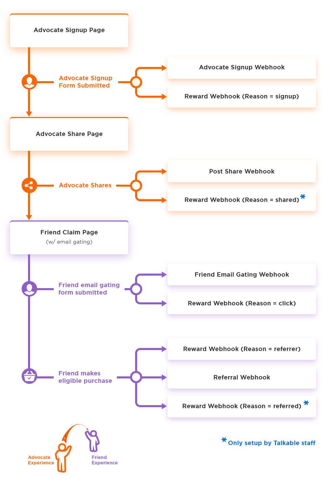
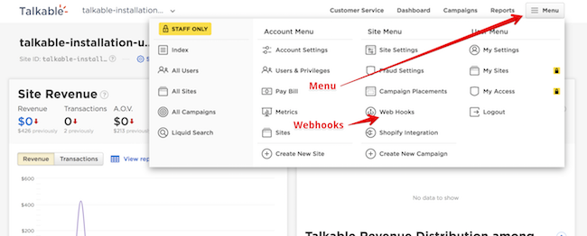

Webhooks¶
Webhooks are “user-defined HTTP callbacks” triggered by events on Talkable’s site. Subscribing to Talkable Webhooks allows you to receive notifications about various events from Talkable, for example, when a Reward should be given, or when a Friend or Advocate opts in to an email newsletter subscription.
After subscribing to a Webhook, your app can execute code immediately after specific events occur in Talkable.
http://en.wikipedia.org/wiki/Webhook
Each Webhook in Talkable is defined with an HTTP URL to deliver Webhook data (aka payload). This URL should be defined and implemented on the client’s site.
Available Webhooks
Below is a user experience flow showing when Talkable Webhooks are called. For more details concerning specific Talkable Webhooks, click the appropriate Webhook type in the left-hand menu.
Note
The Reward Webhooks will only send if there is an associated incentive configured. For example, for the ‘Reward Webhook’ (reason = signup) to send, there must be a signup incentive configured in the campaign rules.
Set Up
Set up and test Talkable Webhooks by navigating to Menu then Webhooks
Proceed to Create New Webhook
Choose a Webhook from the dropdown and provide your endpoint URL
From here, Send Sample, Edit, Delete or Create New
Take note of your Talkable security key. This key will be the same for all Talkable Webhooks on a given site. Talkable includes a key parameter in Webhooks which are unique to each site as a way to identify Talkable as an authorized server. Your Talkable Webhook security key can be found in the Webhook set up page.
Talkable Webhooks will trigger automatically based on associated events defined by Webhook type.
Testing
Testing webhooks can be accomplished with the help of Webhook Tester, an external service that tests your post-receive messages.
Visit Webhook Tester and click Copy to copy the URL you are given.
Open your site on Webhooks set up page.
Click New.
Select webhook type.
Paste your Webhook Tester URL and save.
Click Deliver Sample near the webhook you want to test.
After you finish the implementation on your site change Webhook Tester URL to the live URL on your site.
Click Deliver Sample to test webhook with Live URL.
Data
All Webhooks are delivered as an HTTP Post request with the main parameter called payload. All data inside this parameter is encoded as JSON. Below is a PHP parameter decode example:
json_decode($_POST["payload"])
Parsing Timestamps
Timestamp data type is not a part of JSON standard. Timestamps
are passed as strings in ISO 8601 compatible format. To function properly, ensure
your date parser is compatible to this standard. Java users go here:
http://stackoverflow.com/questions/2201925/converting-iso8601-compliant-string-to-java-util-date
Response Codes
Talkable considers a Webhook as “delivered successfully” when a site server returns a 2xx response status. Otherwise Talkable will continually retry to deliver a Webhook after a set interval of time.
HTTP Responses and Their Meanings
2xx: Success
200: OK
201: Created
202: Accepted
203: Non Authoritative Information
204: No Content
205: Reset Content
206: Partial Content
If you have a problem on your server, you can answer with code 500. If there is some problem in our request (problem on Talkable’s side), you can answer “400 Bad Request”.
Talkable will retry delivery of Webhook if any other error code is received.
Security Key
Talkable includes a key parameter in Webhooks which are unique to each site
as a way to identify Talkable as an authorized server. Your Talkable Webhook
security key can be found in the Webhook set up page.
Type
The type parameter of a Webhook request can be used to identify which Webhook
is received without looking at the payload. This will be useful if you point multiple
Webhooks to the same URL; for instance, for data collection purposes.
Possible types are:
referral_web_hookcreate_coupon_web_hookpost_share_web_hookoffer_signup_web_hookclaim_signup_web_hookreward_web_hookunsubscribe_web_hookcheck_unsubscribe_web_hookevent_web_hook
Site
Every Webhook has a site parameter that identifies which Talkable site sent
this request. This is useful if you have a multi-site setup or use a staging site.
Whitelisting Talkable IPs
In case your servers are behind firewall, you may need to whitelist Talkable IP addresses so webhooks can be delivered. Pass list of these addresses to your network administrator:
|
|
|
|
Compatibility and Versioning
Talkable Webhooks do not currently incorporate versioning. Current spec will not be changed for all existing hooks. Note that Talkable may add additional data elements to existing Webhooks, but should not remove or change existing data elements.
See available Webhooks on the navigation sidebar.